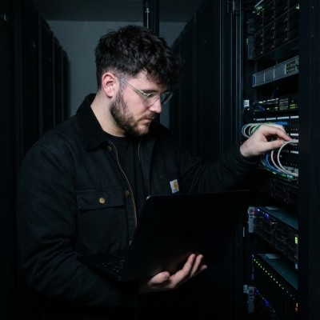
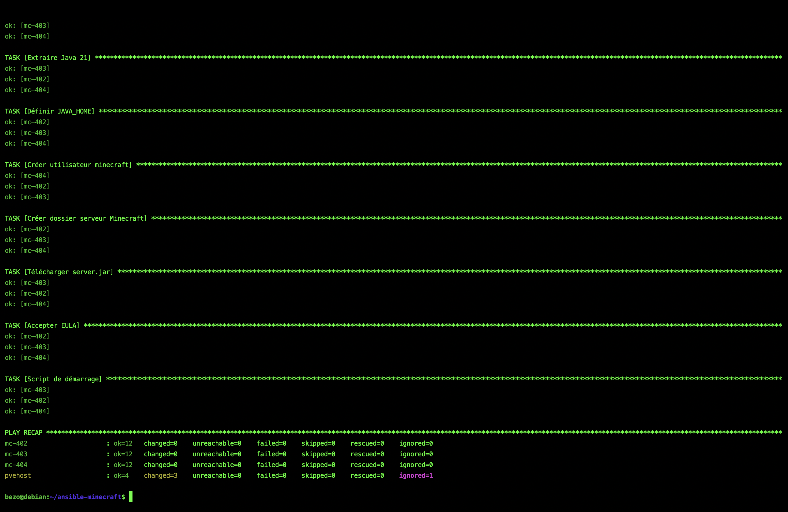
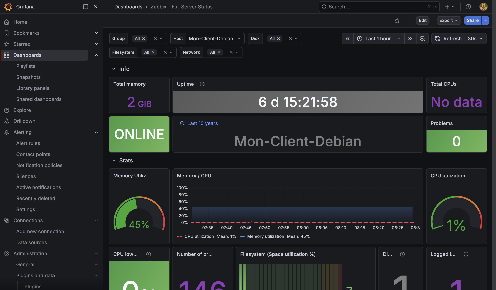

Accueil
2024 — 2026
MARECHAL
Technicien informatique en alternance · 20 ans · Caen, Normandie
BTS SIO option SISR à l'AFTEC Caen — 2ème année
En alternance chez Armatis depuis août 2024
Recherche alternance Bachelor Cybersécurité & Administration Réseau

réalisés
professionnelles
(PIX + Azure)
formation IT
- Support utilisateur N1 & N2, gestion de tickets, assistance sur site et à distance
- Déploiement & configuration de postes Windows 11 et outils métiers
- Diagnostic d'incidents matériels, logiciels et réseau (LAN, Wi-Fi, VLAN)
- Gestion des comptes Active Directory : droits, groupes, GPO
- Brassage réseau, vérification de connectivité, interventions sur switches
- Chiffrage et sécurisation de disques, mise en route d'un RAID
- Déploiement automatisé de postes via MDT, routage et config switches (VLAN)
- Support informatique N1 & N2, micro-informatique
- Installation de postes de travail, brassage de prises réseau
- Installation et configuration de Zabbix (supervision réseau & équipements)
- Programmation JS, modélisation 2D/3D, découpe laser, accueil public
- Résolution de problèmes réseau, configuration de switches
Projets
professionnelles
L'administration manuelle de serveurs est source d'erreurs et d'incohérences. Ce projet démontre la maîtrise de l'Infrastructure as Code en automatisant intégralement le déploiement de 3 serveurs Minecraft en même temps sous Proxmox VE via Ansible — une seule commande, zéro intervention manuelle.
- Déploiement en cluster de 3 serveurs Minecraft simultanés via playbook Ansible.
- Principe d'idempotence : même résultat garanti après N exécutions du playbook.
- Inventaire YAML, modules Ansible (apt, user, copy, systemd), SSH sans agent cible.
- Session tmux persistante, utilisateur système dédié, JVM configurée.

[Image ansible-playbook.png introuvable]'; this.style.display='none';">Besoin réel rencontré en stage chez Armatis : surveiller une infrastructure manuellement devient impossible à grande échelle. Ce projet déploie une solution complète de supervision avec collecte de métriques, alertes automatiques et dashboards modernes sur Debian 12.
- Zabbix 7.0 installé sur Debian 12 avec MariaDB pour le stockage des métriques.
- Agents Zabbix sur serveurs distants : collecte CPU, RAM, disque, réseau en temps réel.
- Couplage Grafana OSS via API Zabbix — dashboards interactifs et personnalisés.
- Architecture complète : Zabbix Server + Frontend PHP + Agent + MariaDB + Apache2.

[Image grafana-dashboard.png introuvable]'; this.style.display='none';">Compétences
BTS SIO SISR
Support et mise à disposition de services informatiques (Commun SISR et SLAM)
- Gérer le patrimoine informatique : Recenser, identifier et gérer les équipements, logiciels et configurations (GLPI, OCS Inventory).
- Répondre aux incidents : Traiter les demandes d'assistance, diagnostiquer les pannes matérielles/logicielles et assurer le support utilisateur N1/N2.
- Développer la présence en ligne : Participer à la gestion et l'évolution du site web ou de l'intranet de l'organisation.
- Travailler en mode projet : Planifier, analyser et participer activement au développement d'une solution informatique en équipe.
- Mettre à disposition des services : Installer, tester et déployer un nouveau poste, serveur ou logiciel pour les utilisateurs.
- Organiser son développement professionnel : Mettre en place une veille technologique et sécuritaire (flux RSS) et développer ses compétences.
SISR (Mon option)
Cette spécialité forme des professionnels capables d'installer, configurer et gérer les équipements et réseaux informatiques.
- Administration Systèmes : Déploiement et gestion de Windows Server et Linux (Debian, Ubuntu). Active Directory, GPO, DNS, DHCP.
- Gestion Réseau : Configuration de switches, routeurs, pare-feux. Création de VLANs et routage.
- Virtualisation : Maîtrise des environnements virtuels (Proxmox VE, VMware ESXi, Hyper-V).
- Supervision : Monitoring en temps réel des serveurs et réseaux (Zabbix, Grafana, Centreon).
- Cybersécurité : Sécurisation des accès, mise en place de VPN, sauvegardes et plan de reprise d'activité (PRA).
- Automatisation : Déploiement automatisé (Ansible, scripts PowerShell, Bash).
SLAM
Cette spécialité est orientée vers le développement, la conception de logiciels et la création d'applications web ou mobiles.
- Développement Web : Création de sites et interfaces (HTML, CSS, JS, PHP, frameworks).
- Développement Objet : Programmation d'applications logicielles (Java, Python, C#).
- Bases de données : Modélisation (MCD/MLD) et requêtes SQL (MySQL, PostgreSQL).
- Gestion de projet : Utilisation des méthodes Agiles (Scrum) et du versioning (Git/GitHub).
- Maintenance : Correction de bugs et ajout de nouvelles fonctionnalités sur des logiciels existants.
- Licence Professionnelle : Métiers des Réseaux Informatiques et Télécommunications, Sécurité des Systèmes d'Information.
- Bachelor (Bac+3) : Bachelor Cybersécurité, Bachelor Administrateur Réseaux et Cloud (ce que je vise).
- Diplôme d'Ingénieur (Bac+5) : Écoles d'ingénieurs en informatique (CESI, ENI, CNAM) pour devenir Architecte Réseau ou Expert Cybersécurité.
- Master / Mastère (Bac+5) : Management des Systèmes d'Information, Sécurité Informatique.
Veille Techno.
Mise à jour auto
Documents
Contact
ensemble.
Disponible pour une alternance Bachelor Cybersécurité & Administration Réseau à partir de 2026. N'hésitez pas à me contacter directement.